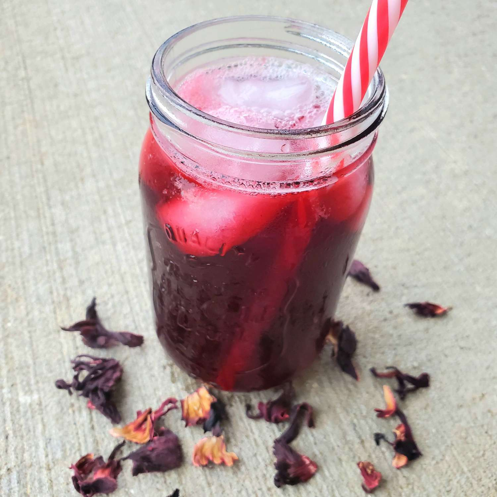

Hibiscus Tea
Home

Description
This hibiscus drink is served throughout Mexico.
It is nice and refreshing.
It is similar to a tart cranberry tea drink.
Ingredients
- 6 cups of water
- 2 cups dried hibiscus petals
- 1 cup uncooked instant rice
- 1 cinnamon stick
- 1 pinch grounded cloves
- 1 pinch ground nutmeg
- 1 pinch ground allspice
- 1 ½ cups white sugar
Steps
-
Place 6 cups of water in a large saucepan; bring to a boil.
Stir in the hibiscus petals, cinnamon, cloves, nutmeg, and allspice.
Reduce heat to medium-low, and gently simmer until the water has turned a deep red, 30 to 45 minutes.
-
After cooling, strain the warm liquid into a 1 gallon pitcher through a wire mesh strainer.
Squeeze as much liquid from the petals as you can, then discard the petals.
Stir in the white sugar until dissolved, then pour in enough cold water to fill the pitcher.
Serve immediately or let stand overnight for best taste.